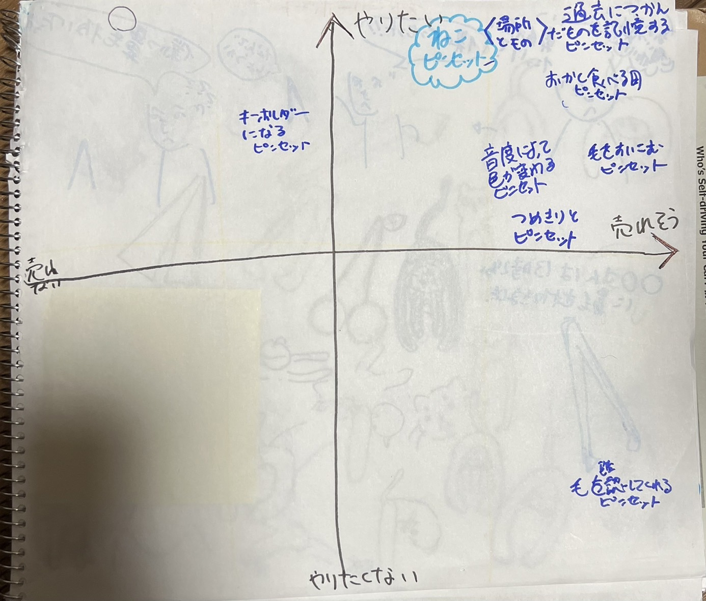
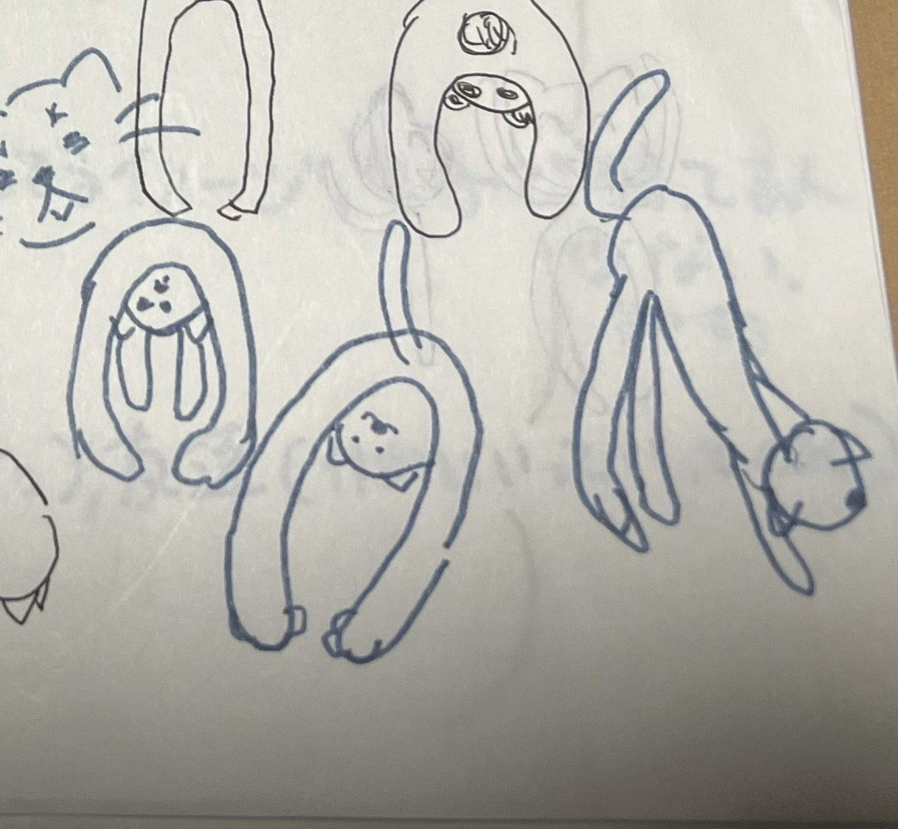
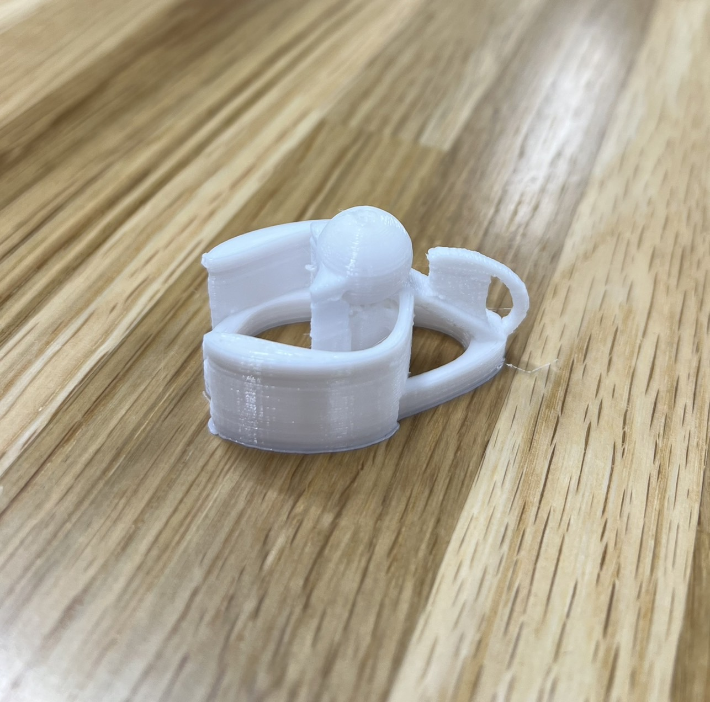
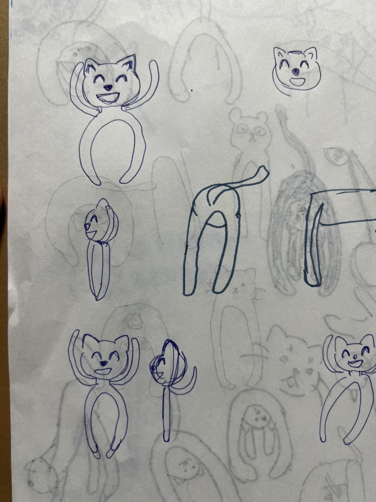
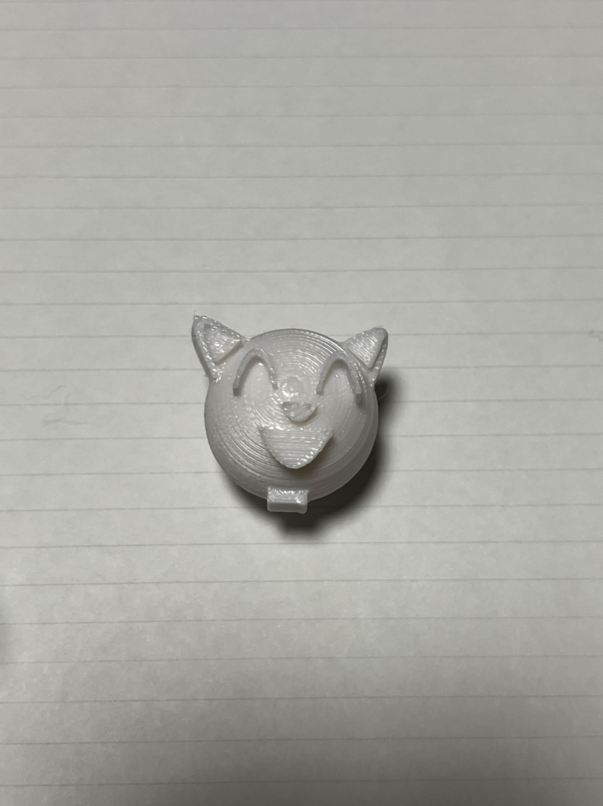
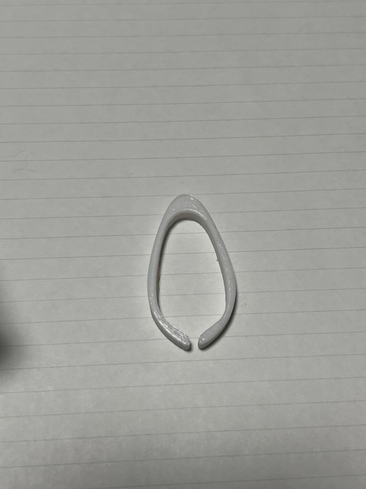
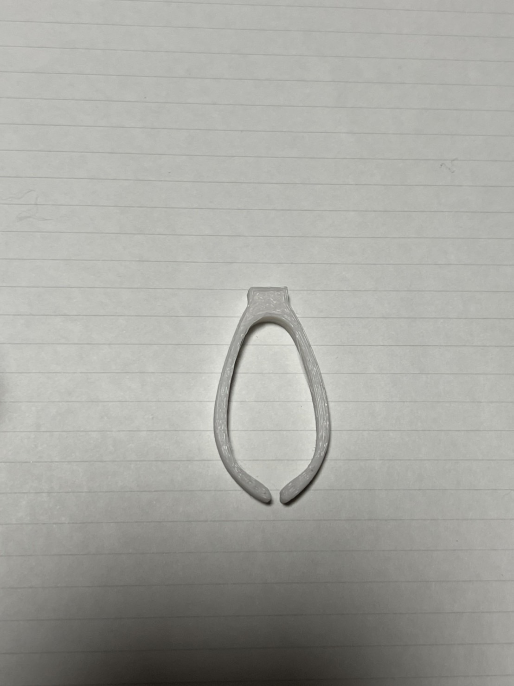
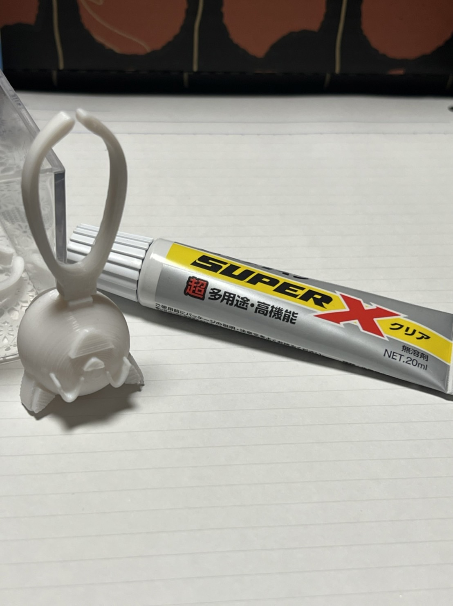
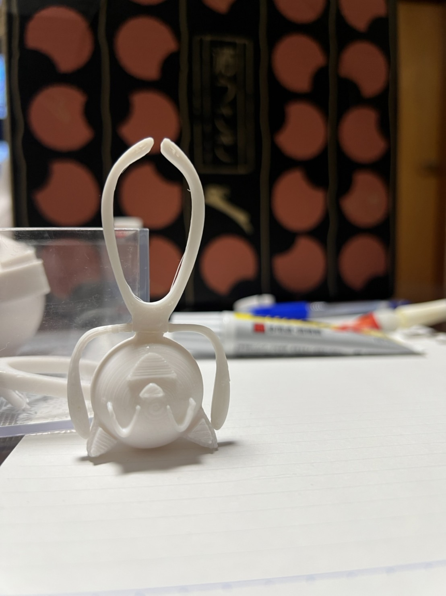

3Dプリンターで作った猫型ピンセット

^ ^
やりたいことは沢山ありましたが、動物が好きなので猫のピンセットにしました！（=・ｘ・=)

初期のアイデア
猫が覗いているかのようなピンセットを作ろうと思っていた。
しかし・・・

猫の胴体や頭が浮いているため、柱が作られてしまう・・・
パーツも小さいためバラバラに出力しても接着剤で接合できなかった。
アイデアを変更！

こんな感じで少し顔のでかい猫にしよう！
いざ出力！！！


実際に接着剤で接合を試みるが失敗したため接合しやすいようにピンセットの上に首の土台を設けた。
⇦こんな感じ>
頭とピンセットを最初に接合していく。

手も付けたら完成！！！

感想
掴めるものが極めて限られている。もう少し大きいものも掴めるように設計するのもよかったかもしれない。また、接着剤だと接合部が不安定なのでなるべく3DプリンターですべてでできるようにFusipn360を上手く使いこなしたい。